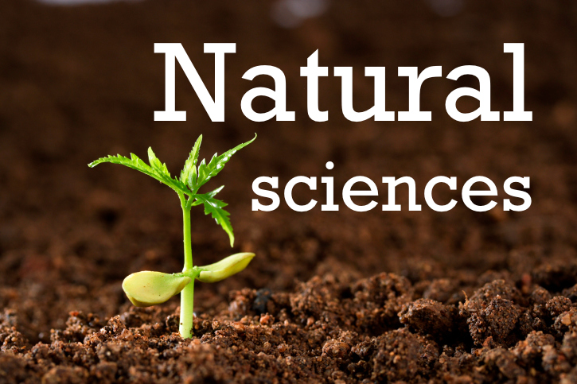

...By students for students

.jpg)
.jpg)
...Natural or Social science
choose your life line
choose your life line
It is designed for grade 11 students. We have seen that students get very confused what to choose from the sciences when they become grade 11 students and this problem make student’s to have a miserable life. We think that it is because they don’t have enough information what they’re dealing with.
So this website can help them by providing information including the fields that they can get if they choose Natural science or Social science and also it helps them to identify their interest. The website included definition about Natural Science and Social Science with pictures, videos and fields that they can get under each topics.
Introduction:- on the Definition tab you can find the difinition of natural science and social science.
- on the Fields tab there are sub tabs that says N.scince and S.science. on N.science you can find fields related to Natural science ans on the S.sceince you can find fields related to social science.